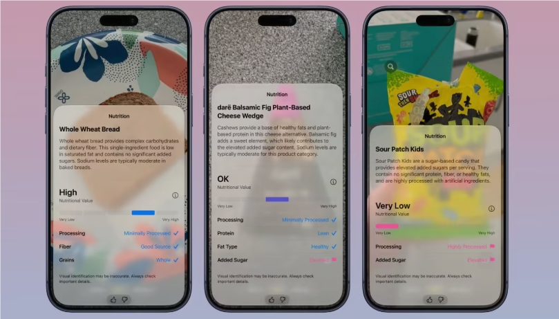
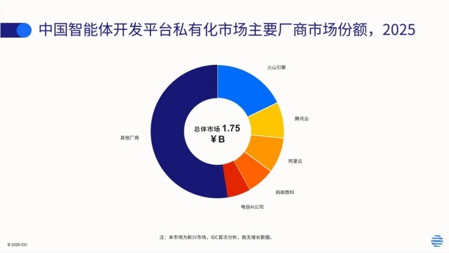
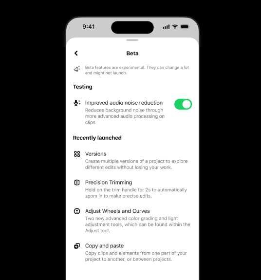

AI Daily: AutoNavi's 'Wendian' Opens AI Capabilities to Third Parties; Dianping Targets AI-Generated Fake Reviews; Kimi Set to Launch AI-Native Credit Card
Welcome to AI Daily — your daily briefing on the evolving landscape of artificial intelligence.
Explore emerging AI products: https://app.aibase.com/zh
1. Small Shops, Big Intelligence: AutoNavi's Wendian Opens AI Capabilities to Third Parties
AutoNavi Cloud Map has opened its commercial AI agent ecosystem to the public, commencing the beta trial of 'AutoNavi Wendian.' The initiative extends enterprise-grade business intelligence — once reserved for major chains — to small and micro merchants.

📌 🏪 AutoNavi's Wendian opens AI capabilities to third-party access. 🧠 Delivers intelligent business analytics to small and micro merchants.
2. Dianping Cracks Down on AI-Fabricated Reviews
Dianping has announced an aggressive crackdown on AI-generated spam reviews, reinforcing platform content integrity and user trust.

📌 ⚠️ Dianping intensifies its campaign against AI-fabricated reviews. ✅ Safeguarding platform content authenticity.
3. Kimi to Debut AI-Native Credit Card
Moonshot AI has partnered with financial institutions to launch the Kimi AI-native credit card, embedding AI capabilities for smart spending analytics and wealth management recommendations.

📌 💳 Kimi set to launch AI-native credit card. 🤖 Leverages AI for intelligent consumption analytics.
4. Xiaomi Open-Sources AI Coding Assistant MiMo Code
Xiaomi has open-sourced MiMo Code V0.1.0, a terminal-based AI coding assistant equipped with a complimentary state-of-the-art multimodal model.

📌 🔓 Xiaomi open-sources MiMo Code, its AI coding assistant. 💻 Ships with a free top-tier multimodal model.
5. JD MALL Deploys First Humanoid Robots
JD MALL has deployed its inaugural cohort of humanoid robots, tasked with customer guidance, delivery, and other service functions.
6. Google Releases DiffusionGemma Model
Google has released DiffusionGemma, a model that fuses diffusion methodology with the lightweight Gemma architecture.
7. Google Gemini 3.5 Flash Unveiled
Google has officially launched Gemini 3.5 Flash, featuring a substantial leap in inference speed.
8. Apple Addresses iOS 27 AI Controversy
Apple has issued a direct response to the iOS 27 AI controversy, asserting that Apple Foundation Models are entirely self-developed and proprietary.